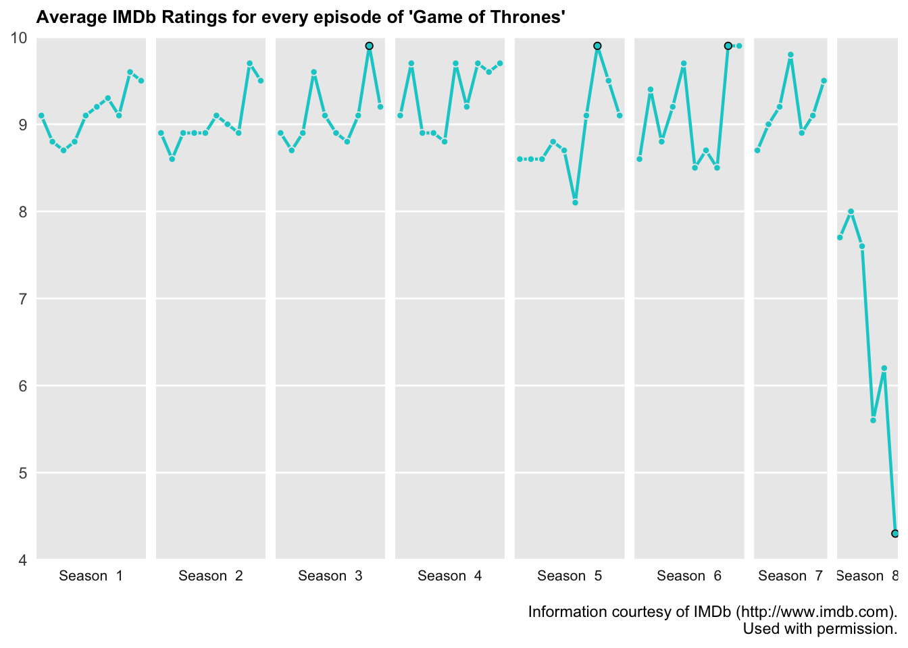

Introduction
The NY Times recently published an article showing a line graph of IMBd average fan ratings of “Game of Thrones” (“GOT”) episodes over the seasons (as well as line graphs of other popular Tv shows). The line graph is faceted by season, and the creators also added labels with the names of some the episodes with the highest ratings, and one episode from the last season, “The Last of the Starks”, with a 5.6 average rating.
As you can read in the article, and if you watched the show, the general consensus is that the last season bombed. You can read more about why the last season was the least rated of the show. The purpose of this article is to share how I attempted to replicate this simple, but informative line graph. I’m a fan of the amazing work that the NY Times creates, and I’m always wondering about the work process and software that graphic designers and data experts use to create the data visualizations.
This blog includes the data and code I used to recreate my own version of the line graph showing the average IMDb ratings for every episode of “Game of Thrones”. I’m not sure what program or sofware they used for this graph, but R is a great tool for creating data visualizations, especially with the ggplot package.
The Data
IMDb provides available data subsets as tab-separated-values (TSV) files. For purposes of this excercise I downloaded the following data sourses:
- title.episode.tsv.gz – Tv episode information, such as episode and season number.
- title.ratings.tsv.gz - Rating and votes information for titles.
I also created an extra spreadsheet with each episode name.
Before starting I first loaded the packages I worked with and the tsv files. For this excercise I used the dyplr package for data manipulation, and ggplot2, ggExtra, and ggrepel for data visualization.
library(tidyverse)
library(readr)
library(ggplot2)
library(ggExtra)
library(plotly)
library(DT)
library(widgetframe)Data Wrangling
The “parentTcons” column of the episodes dataframe contains the alphanumeric identifier of the parent TV Series. In this case I used the GOT identifier “tt0944947” to filter the data, then left joined the ratings data.
GOT_episode_ratings <- episodes %>% filter(parentTconst == "tt0944947") %>%
left_join(Title_ratings, by = "tconst") %>% left_join(Episode_Names, by = "tconst")I changed episode number to numeric, and changed the “seasonNumber” column to add the “season”" text. I used the DT package to create an interactive data table.
GOT_episode_ratings$episodeNumber <- as.numeric(GOT_episode_ratings$episodeNumber)
GOT_episode_ratings$seasonNumber <- paste("Season", "", GOT_episode_ratings$seasonNumber)
GOT_episode_ratings <- GOT_episode_ratings[with(GOT_episode_ratings, order(seasonNumber,
episodeNumber)), ]
# create interactive data table
Data_Table <- datatable(GOT_episode_ratings)
frameWidget(Data_Table, height = 350, width = "95%")Creating the Line Graph
To create the line graph I applied the following code:
GOT_Graph <- ggplot(GOT_episode_ratings, aes(x = episodeNumber, y = averageRating,
label = Name, group = 1)) + geom_line(color = "cyan3", size = 0.8) + geom_point(shape = 21,
color = "grey92", fill = "cyan3", size = 1.5) + # Using facet_grid separate a grid per season and resize each grid according
# to the number of episodes. The switch attribute moves the grid label to
# the bottom.
facet_grid(~as.factor(seasonNumber), space = "free_x", scales = "free_x", switch = "x") +
# Remove gridlines of the x axis for cleaner background
removeGrid(x = TRUE, y = FALSE) + # Set limits to the y axis
scale_y_continuous(limits = c(4, 10), expand = c(0, 0)) + labs(title = "Average IMDb Ratings for every episode of 'Game of Thrones'",
caption = "Information courtesy of IMDb (http://www.imdb.com).
Used with permission.") +
# Using theme used removes axis text, ticks, titles, and change background
# of grid label.
theme(plot.title = element_text(size = 10, face = "bold"), axis.text.x = element_blank(),
axis.ticks = element_blank(), strip.text.x = element_text(size = 8), strip.text.y = element_text(size = 8),
axis.title = element_blank(), strip.background = element_rect(fill = "white"))
GOT_GraphCreate Subset Data for episode Labels
I also wanted to highlight the points of the labeled episodes as seen in the example. For this I added an extra geom_point by choosing the data corresponding to each name.
GOT_Graph + geom_point(shape = 1, data = filter(GOT_episode_ratings, Name == "The Rains of Castamere" | Name == "Hardhome" | Name == "Battle of the Bastards" | Name == "The Iron Throne"), size = 1.5, stroke = .5)
Labeling Limitations
I found the text labels difficult to add. I tried using the geom_text but the text would cut off within each grid. So far I haven’t been able to find any solution online. I suspect that the graph was exported to Illustrator for the labels. I’ll eventually export it to Illustrator and will add the changes to the blog post in the near future.
ggplotly
I decided to add some interactivity to the graph by using the plotly package. The interactive graph loses some of the customization previously achieved by changing the ggplot theme. I made sure to add “label = Name” to the ggplot aesthetic to be able to see the episode name in the tooltip alongside the episode number and average rating.
plotly_graph <- ggplotly(GOT_Graph)
frameWidget(plotly_graph)Conclusion
There are more design details that I could gave applied to the line graph, but the purpose of the excercise was for myself and others interested to get a general sense about how NY Times data visualization experts might design a draft, or a complete graph using R.